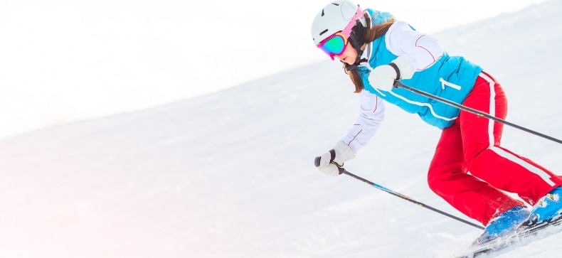

Snieglentės, Snieglenčių inventorius | - Slides.lt
2020.10.29 10:45
kontaktai svetainės struktūra Krepšelis 0 Prekė Prekės (tuščia)
Prekių nėra
Nemokamas pristatymas ! Pristatymas 0,00€ VisoPirkti
Prekė sėkmingai pridėta į krepšelį
Kiekis VisoKrepšelyje yra 0 prekė (-ės). Krepšelyje yra 1 prekė.
Prekės viso .= Viso pristatymas .= Nemokamas pristatymas ! Viso .= Tęsti apsipirkimą Pereiti prie apmokėjimo Prisijungti Jūsų paskyra Meniu Kalnų slidinėjimas Slidžių inventorius Kalnų slidės Slidžių batai Slidžių lazdos Aksesuarai Šalmai Slidinėjimo apsaugos Slidinėjimo akiniai Saulės akiniai Slidžių dėklai Slidžių vaškas Slidinėjimo apranga Slidinėjimo pirštinės Pošalmiai Termo rūbai Slidinėjimo kojinės Multifunkcinės skaros Snieglenčių sportas Snieglenčių inventorius Snieglentės Snieglenčių batai Snieglenčių apkaustai Snieglenčių aksesuarai Slidinėjimo šalmai Apsaugos Slidinėjimo akiniai Akiniai nuo saulės Snieglenčių dėklai Snieglenčių priedai Snieglenčių apranga Pirštinės Pošalmiai Termo rūbai Slidinėjimo kojinės Multifunkcinės skaros Riedėjimas Riedučiai Riedučiai suaugusiems Riedučiai vaikams Riedučių dalys Longboardai, Riedlentės, Mini boardai. Longboardai Riedlentės Penny board Riedlenčių dalys Paspirtukai Sudedami paspirtukai Triukiniai paspirtukai Paspirtukų dalys Elektrinis paspirtukas Aksesuarai Riedučių apsaugos Šalmai Ratukai, guoliai ir kiti priedai Aksesuarai Pačiūžos Aksesuarai Slidinėjimo aksesuarai Slidinejimo akiniai Saulės akiniai Slidinėjimo šalmai Pošalmiai ir multifunkcinės skarelės Slidinėjimo apsaugos Pirštinės Slidinėjimo įrangos dėklai Priežiūros priemonės Termo rūbai Laisvalaikis Kaitai Šokdynės, skersiniai ir kitos fitneso prekės Lauko sportas Pačiūžos Nuoma Servisas Kontaktai Snieglenčių sportas > Snieglenčių inventoriusSnieglenčių inventorius
Kalnų slidinėjimas Slidžių inventorius Kalnų slidės Slidžių batai Slidžių lazdos Aksesuarai Šalmai Slidinėjimo apsaugos Slidinėjimo akiniai Saulės akiniai Slidžių dėklai Slidžių vaškas Slidinėjimo apranga Slidinėjimo pirštinės Pošalmiai Termo rūbai Slidinėjimo kojinės Multifunkcinės skaros Snieglenčių sportas Snieglenčių inventorius Snieglentės Snieglenčių batai Snieglenčių apkaustai Snieglenčių aksesuarai Slidinėjimo šalmai Apsaugos Slidinėjimo akiniai Akiniai nuo saulės Snieglenčių dėklai Snieglenčių priedai Snieglenčių apranga Pirštinės Pošalmiai Termo rūbai Slidinėjimo kojinės Multifunkcinės skaros Riedėjimas Riedučiai Riedučiai suaugusiems Riedučiai vaikams Riedučių dalys Longboardai, Riedlentės, Mini boardai. Longboardai Riedlentės Penny board Riedlenčių dalys Paspirtukai Sudedami paspirtukai Triukiniai paspirtukai Paspirtukų dalys Elektrinis paspirtukas Aksesuarai Riedučių apsaugos Šalmai Ratukai, guoliai ir kiti priedai Aksesuarai Pačiūžos Aksesuarai Slidinėjimo aksesuarai Slidinejimo akiniai Saulės akiniai Slidinėjimo šalmai Pošalmiai ir multifunkcinės skarelės Slidinėjimo apsaugos Pirštinės Slidinėjimo įrangos dėklai Priežiūros priemonės Termo rūbai Akcija Laisvalaikis Kaitai Šokdynės, skersiniai ir kitos fitneso prekės Lauko sportas PačiūžosPrekių filtras
Clear filters Peržiūrėti produktus 82Specialūs pasiūlymai
ESKA Face mit
Pirštinės ESKA Šiltos ir patikimai...
38,50€ -30% 55,00€ Visi pasiūlymaiMūsų parduotuvės
Raskite mūsų parduotuves Snieglenčių inventorius
Iš viso snieglenčių inventorius - būtiniausi snieglentininko atributai yra snieglentė, snieglenčių apkaustai ir snieglenčių batai. Snieglentės ilgį turėtumėte rinktis panašiai su pečiais, o snieglentės tipą pagal savo poreikį ar darysite su ja triukus, tiesiog leisitės nuo kalno ar norite universalios freeride snieglentės. Visada atkreipkite dėm...
Iš viso snieglenčių inventorius - būtiniausi snieglentininko atributai yra snieglentė, snieglenčių apkaustai ir snieglenčių batai. Snieglentės ilgį turėtumėte rinktis panašiai su pečiais, o snieglentės tipą pagal savo poreikį ar darysite su ja triukus, tiesiog leisitės nuo kalno ar norite universalios freeride snieglentės. Visada atkreipkite dėmėsį tiek į snieglentės, tiek į snieglenčių batų minkštumą.
DaugiauSnieglenčių inventorius Yra 82 prekės(-ių).
Subkategorijos
Snieglentės
Snieglentės pagrinde būna dviejų tipų - "freeride" arba "freestyle" snieglentės, tad rinktis snieglentę turėtumėte pagal tai, ką planuojate su ja veikti: ar daryti triukus "box'uose" ar vystyti didesnius greičius. Taip pat rinkdamiesi snieglentę turi atkreipti dėmėsį į jos ilgį ir nepamiršti snieglentės kietumo.
Snieglenčių batai
Kad snieglenčių sportas, jums būtų malonumas, kruopščiai pasirinkite snieglenčių inventorių ir snieglenčių batus. Snieglenčių batai turi atitikti jūsų esamą dydį. Pagal snieglentės batų dydį, turėtumėte rinktis ir snieglentės apkaustų dydį. Taip pat nepamirškite suderinti snieglentės apkaustų minkštumo su snieglentės batų minkštumo.
Snieglenčių apkaustai
Snieglenčių apkaustai - sujungia jūsų sniegletės batus su pačia snieglente. Sniegletės apkaustai turi atitikti jūsų snieglentės ir snieglentės batų minkštumą, bei dydį. Didesnių pedų savininkai dažnai renkasi snieglentės pažymėtas "W" raide, kas reiškia "wide", t.y. snieglentės plotį per liemenį, kad snieglentės lenkimo metu, jūsų snieglenčių batai, priekyje, neliestų žemės.
Rodyti: Tinklelis Sąrašas Ankstesnis 1 2 3 ... 7 Tęsti Rodoma 1 - 12 iš 82 dalykų Greita peržiūraVolkl WALL PRO 157cm + apkaustai Volkl Volkl WALL PRO 157cm + apkaustai Volkl
Snieglentė Volkl WALL PRO 157cm. Naudota, būklė gera. Tipas: all mountain, freestyle. Pažengimo lygis: intermediate/expert. Snieglentė Volkl WALL PRO 157cm. Naudota, būklė gera. Tipas: all...
180,00€ 157cm Į krepšelį Daugiau Turime parduotuvėje Pridėti palyginimui Greita peržiūraSP CORE 15/16 SP CORE 15/16
Greito užsegimo revoliuciniai apkaustai snieglenčių rinkoje – SP FASTECSP CORE 15/16 . Daugiau jokio ilgo sedėjimo ant šlaito! Šie apkaustai turi greito užsegimo ir atsegimo technologiją “fastec”. Tau tereikės įkišti koją į apkaustą ir užlenkti atkaltėlę – keletas sekundžių ir Tu jau leidiesi nuo kalno. Greito užsegimo revoliuciniai apkaustai snieglenčių rinkoje – SP...
199,00€ M Į krepšelį Daugiau Turime parduotuvėje Pridėti palyginimui Greita peržiūraSP Brotherhood 15/16 SP Brotherhood 15/16
Greito užsegimo revoliuciniai apkaustai snieglenčių rinkoje – SP Brotherhood 15/16 . Daugiau jokio ilgo sedėjimo ant šlaito! Šie apkaustai turi greito užsegimo ir atsegimo technologiją “fastec”. Tau tereikės įkišti koją į apkaustą ir užlenkti atkaltėlę – keletas sekundžių ir Tu jau leidiesi nuo kalno. Greito užsegimo revoliuciniai apkaustai snieglenčių rinkoje – SP...
249,00€ L Į krepšelį Daugiau Turime parduotuvėje Pridėti palyginimui Greita peržiūraAtomic Slasher Atomic Slasher
Snieglenčių batai Atomic Slasher Slascher yra daugiau nei tik įprasti snieglenčių batai. Turi dviejų komponentų, soft flex ir SPL4. Paprastą ir lengvą fast lace užveržimo sistemą vidiniame ir išoriniame bate. Lengvai užsiaunami. Snieglenčių batai Atomic Slasher Slascher yra daugiau nei tik...
116,35€ 179,00€ -35% 29.5cm - (~45europ.d.) 29.0cm - (~44.5europ.d.) 24.0cm - (~38europ.d.) Į krepšelį Daugiau Sumažinta kaina! Turime parduotuvėje Pridėti palyginimui Greita peržiūraAtomic Jamie Atomic Jamie
Snieglenčių batai Atomic Jamie Jamie yra daugiau nei tik įprasti snieglenčių batai. Turi dviejų komponentų, soft flex ir SPL4. Paprastą ir lengvą fast lace užveržimo sistemą vidiniame ir išoriniame bate. Lengvai užsiaunami. Snieglenčių batai Atomic Jamie Jamie yra daugiau nei tik įprasti...
116,35€ 179,00€ -35% 30.0cm - (~45.5europ.d.) 28.5cm - (~44europ.d.) 23.5cm - (~37europ.d.) 23.0cm - (~36.5europ.d.) Į krepšelį Daugiau Sumažinta kaina! Turime parduotuvėje Pridėti palyginimui Greita peržiūra Išpardavimas!Atomic EVOL Atomic EVOL
Snieglenčių batai Atomic EVOL EVOL snieglenčių batai. Turi dviejų komponentų, Bat1. Paprastą ir lengvą fast lace užveržimo sistemą vidiniame ir išoriniame bate. Lengvai užsiaunami. Patogūs ir komfortiški Snieglenčių batai Atomic EVOL EVOL snieglenčių batai. Turi dviejų...
98,45€ 179,00€ -45% 26.5cm - (~41europ.d.) 25.5cm - (~40europ.d.) Į krepšelį Daugiau Turime parduotuvėje Pridėti palyginimui Greita peržiūraNidecker CHARGER Nidecker CHARGER
Snieglenčių batai idecker CHARGER Patogūs komfortiški snieglentės batai Snieglenčių batai idecker CHARGER Patogūs komfortiški snieglentės...
139,00€ 30.0cm - (~45.5europ.d.) 29.5cm - (~45europ.d.) 29.0cm - (~44.5europ.d.) 28.0cm - (~43europ.d.) 27.0cm - (~42europ.d.) Į krepšelį Daugiau Turime parduotuvėje Pridėti palyginimui Greita peržiūraNidecker CHARGER Nidecker CHARGER
Snieglenčių batai idecker CHARGER Patogūs komfortiški snieglentės batai Snieglenčių batai idecker CHARGER Patogūs komfortiški snieglentės...
139,00€ 30.0cm - (~45.5europ.d.) 29.0cm - (~44.5europ.d.) Į krepšelį Daugiau Turime parduotuvėje Pridėti palyginimui Greita peržiūraNidecker EVA Nidecker EVA
Snieglenčių batai Nidecker EVA Patogūs komfortiški ir stilingi moteriški snieglentės batai Snieglenčių batai Nidecker EVA Patogūs komfortiški ir stilingi...
139,00€ 26.0cm - (~40.5europ.d.) 25.0cm - (~39europ.d.) Į krepšelį Daugiau Turime parduotuvėje Pridėti palyginimui Greita peržiūraNidecker EVA Nidecker EVA
Snieglenčių batai Nidecker EVA Patogūs komfortiški ir stilingi moteriški snieglentės batai Snieglenčių batai Nidecker EVA Patogūs komfortiški ir stilingi...
139,00€ 26.0cm - (~40.5europ.d.) 25.5cm - (~40europ.d.) Į krepšelį Daugiau Turime parduotuvėje Pridėti palyginimui Greita peržiūra Išpardavimas!SP Recon BOA SP Recon BOA
This brand Boot is a fantastic boot and a comfortable solution for all boarders including beginners, intermediates and allmountain riders.This model offers riders a very high degree of comfort and specification not usually found at this price.Vulcanized/Stitched rubber outersole*Medium/Stiff flex*All Mountain boot*Improved comfort zones*Softer flex and... This brand Boot is a fantastic boot and a comfortable solution for...
139,00€ 189,00€ 32.0cm - (~48europ.d.) 31.0cm - (~47europ.d.) 27.0cm - (~42europ.d.) 26.0cm - (~40.5europ.d.) 24.0cm - (~38europ.d.) Į krepšelį Daugiau Turime parduotuvėje Pridėti palyginimui Greita peržiūra Išpardavimas!SP Venture II SP Venture II
SP’s been in the industry for over 25 years no and their latest and greatest boot the Venture II is a new cutting each design that provides the perfect fit and stability for a wide range of feet. It's a premium boot with high end features at a low end price. They've added stronger fabric where you really need it, new PU protected shaft and heel support,... SP’s been in the industry for over 25 years no and their latest and...
119,00€ 169,00€ 26.0cm - (~40.5europ.d.) 25.0cm - (~39europ.d.) Į krepšelį Daugiau Turime parduotuvėje Pridėti palyginimui Ankstesnis 1 2 3 ... 7 Tęsti Rodoma 1 - 12 iš 82 dalykųKategorijos
Kalnų slidinėjimas Slidžių inventorius Kalnų slidės Slidžių batai Slidžių lazdos Aksesuarai Šalmai Slidinėjimo apsaugos Slidinėjimo akiniai Saulės akiniai Slidžių dėklai Slidžių vaškas Slidinėjimo apranga Slidinėjimo pirštinės Pošalmiai Termo rūbai Slidinėjimo kojinės Multifunkcinės skaros Snieglenčių sportas Snieglenčių inventorius Snieglentės Snieglenčių batai Snieglenčių apkaustai Snieglenčių aksesuarai Slidinėjimo šalmai Apsaugos Slidinėjimo akiniai Akiniai nuo saulės Snieglenčių dėklai Snieglenčių priedai Snieglenčių apranga Pirštinės Pošalmiai Termo rūbai Slidinėjimo kojinės Multifunkcinės skaros Riedėjimas Riedučiai Riedučiai suaugusiems Riedučiai vaikams Riedučių dalys Longboardai, Riedlentės, Mini boardai. Longboardai Riedlentės Penny board Riedlenčių dalys Paspirtukai Sudedami paspirtukai Triukiniai paspirtukai Paspirtukų dalys Elektrinis paspirtukas Aksesuarai Riedučių apsaugos Šalmai Ratukai, guoliai ir kiti priedai Aksesuarai Pačiūžos Aksesuarai Slidinėjimo aksesuarai Slidinejimo akiniai Saulės akiniai Slidinėjimo šalmai Pošalmiai ir multifunkcinės skarelės Slidinėjimo apsaugos Pirštinės Slidinėjimo įrangos dėklai Priežiūros priemonės Termo rūbai Akcija Laisvalaikis Kaitai Šokdynės, skersiniai ir kitos fitneso prekės Lauko sportas PačiūžosInformacija
Naujos prekės Mūsų parduotuvės Susisiekite su mumis Prekių pristatymas ir garantijaMano paskyra
Mano užsakymai Mano grąžinimai Mano suteiktos nuolaidos Mano adresai Mano asmeninė informacija Mano kuponaiSekite mus
Facebook Youtube